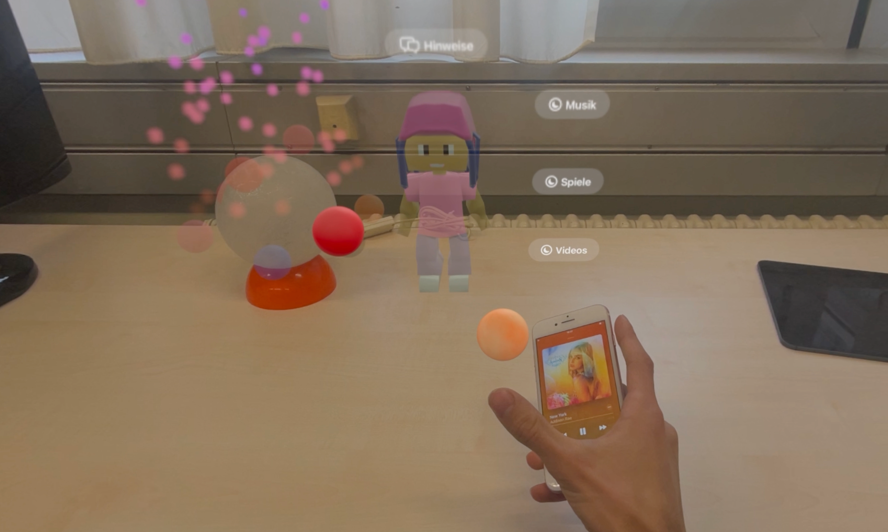
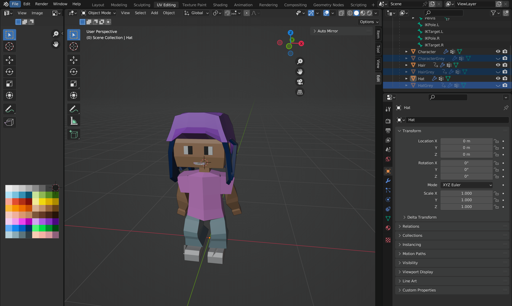
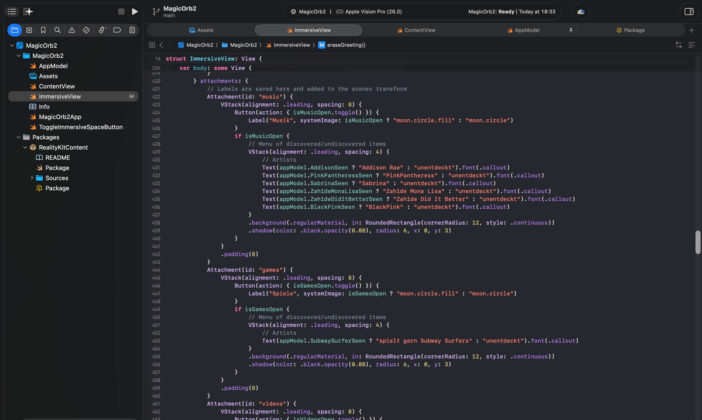

project 1/4

ein Blick durch das Headset auf meine Bachelorarbeit: ein Gamification-Ansatz, um Kindern Datenerfassung auf Alltagsgeräten beizubringen: Musikhören erzeugt "Informationskugeln", die zu einem Nutzerprofil zusammengefügt werden.

Rendering des selbstgemachten Charaktermodells in der Open-Source-Software Blender

unsere virtuellen und realen Objekte verbunden in einer Reality Composer Pro Szene

ein Blick auf meine Xcode-Struktur, wo ich UI-Elemente zum räumlichen Layout hinzufüge
Entwicklung einer Mixed-Reality-Anwendung zur Unterstützung von Kindern beim Verständnis alltäglicher Datenerfassungsmuster
Ich habe meine Bachelorarbeit über die Entwicklung einer Mixed-Reality-Anwendung (MR) geschrieben, die darauf ausgelegt ist, Kinder im Alter von 10–12 Jahren über Datenerfassung und Privatsphäre auf ihren persönlichen Geräten aufzuklären.
Das primäre Ziel war es, ein fesselndes, praxisnahes Erlebnis zu schaffen, das das komplexe Thema der Datenerfassung vereinfacht und visualisiert wie ihre Telefone und Tablets Daten sammeln, in einem Maß das für das Verständnis von Kindern geeignet ist.
Motivation & Wirkung
Diese Arbeit ist motiviert durch den kritischen Bedarf an digitaler Bildung in einer entscheidenden
Entwicklungsphase. In Deutschland steigt die Rate an eigenen Geräten bei Kindern in der Altersgruppe
der 10-
bis 12-Jährigen sprunghaft an. Während traditioneller Unterricht existiert, nutzt dieses Projekt
einen Gamification-Ansatz, um Kinder aktiv zu befähigen, informierte Subjekte in Bezug auf ihren
digitalen Fußabdruck zu werden.
Diese Arbeit baut auf einer früheren Masterarbeit auf, die das theoretische Design und das Prototyping im frühen Stadium etablierte, und entwickelt das Konzept zu einer vollständig realisierten, immersiven Anwendung weiter.
Die Anwendung ist für Apple Vision Pro konzipiert und nutzt einen leistungsstarken Technologie-Stack, um die digitale und physische Welt zu verschmelzen: SwiftUI, Combine, RealityKit und ARKit.
Hauptmerkmale des Erlebnisses:
- Begleitetes Erkunden: Einem Benutzer werden ein vorbereitetes physisches Telefon und Tablet präsentiert, wobei ein virtueller Charakter Hinweise zur Interaktion gibt.
- Datenvisualisierung: Aktionen wie das Musikhören lösen das Spawnen virtueller Informationskugeln in der Nähe des physischen Geräts aus.
- Physisch-Digitale Verankerung: Benutzer werden ermutigt, diese Kugeln zu sammeln und sie einem "Portal" hinzuzufügen, das an einem realen Objekt (einer mondähnlichen Lampe) verankert ist, wobei der physische Raum als primäre interaktive Leinwand genutzt wird.
- Abgeleitete Daten: Der Charakter erklärt, wie persönliche Profile aus gesammelten Daten erstellt werden, und bietet eine inventarartige Übersicht. Nach der Sammlung werden die Daten verarbeitet und visualisiert, um zu demonstrieren, wie abgeleitete Daten (Annahmen über den Benutzer basierend auf gesammelten Daten) generiert und dem Profil hinzugefügt werden.
Ergebnisse
Wir haben erwartet, dass dieses hochimmersive Erlebnis zu einem deutlich gesteigerten Bewusstsein
für Datenerfassung und inferenzielle Profilerstellung führen wird. Unsere Ergebnisse bestätigen das
Potenzial dieser Anwendung.
- Plattform: Apple Vision Pro (visionOS)
- Tech Stack: SwiftUI, Combine, RealityKit, ARKit
- Paradigma: Mixed Reality (MR) & Tangible User Interfaces
- Zielgruppe: Kinder (10–12 Jahre)